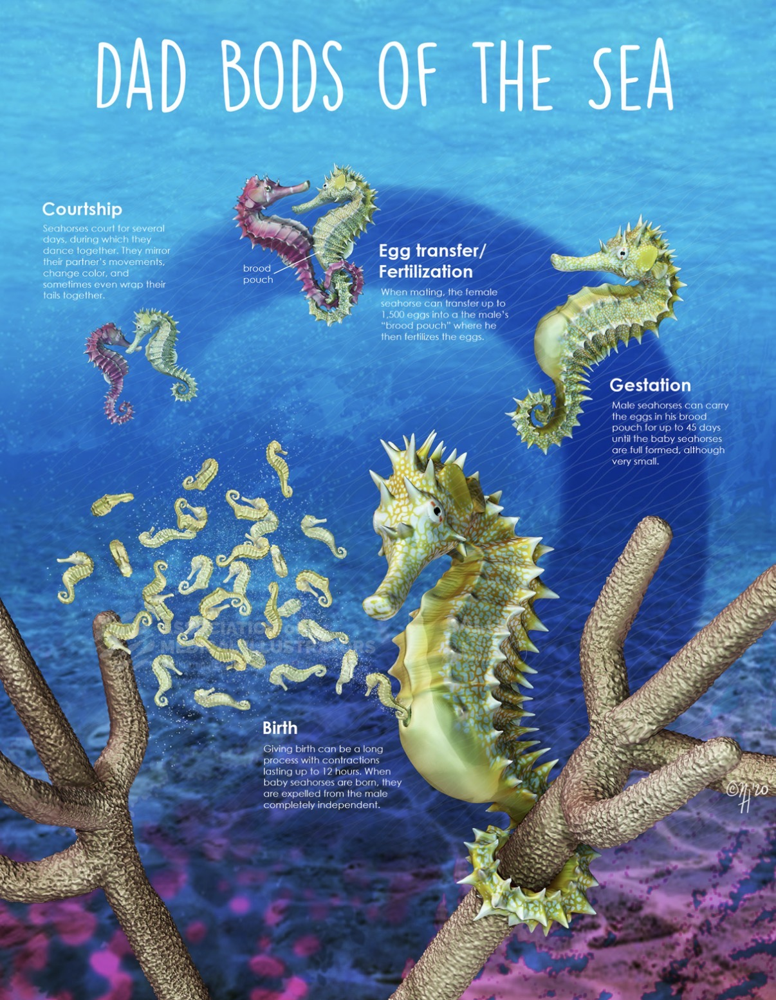
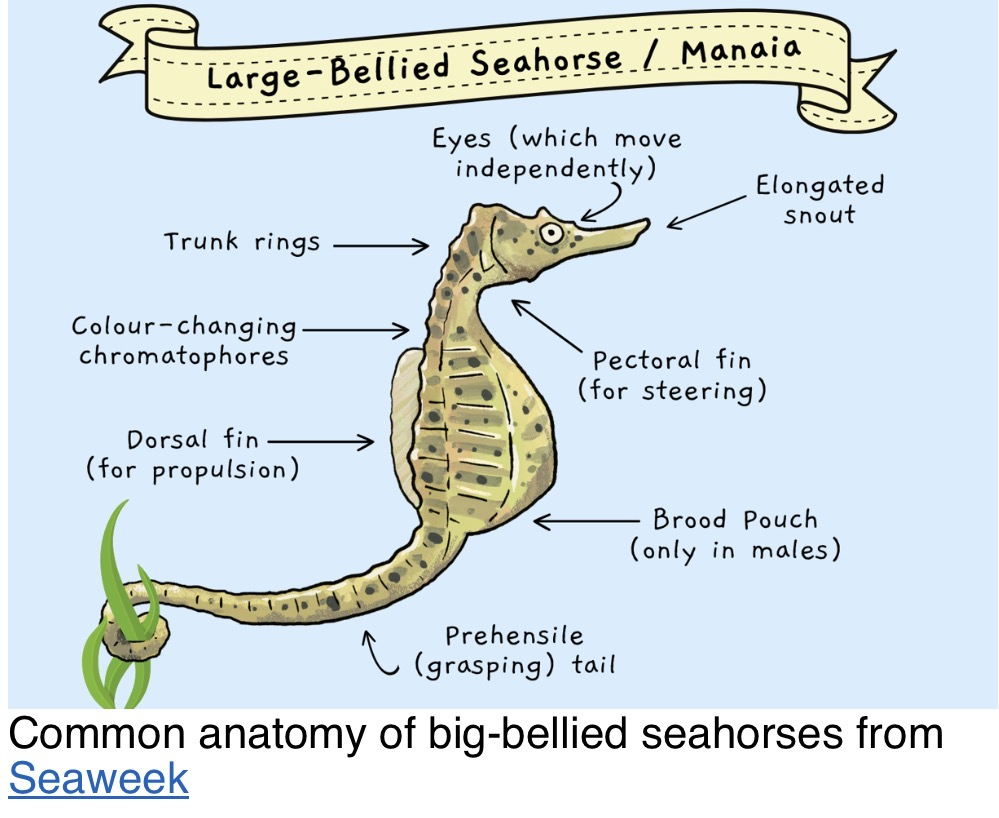
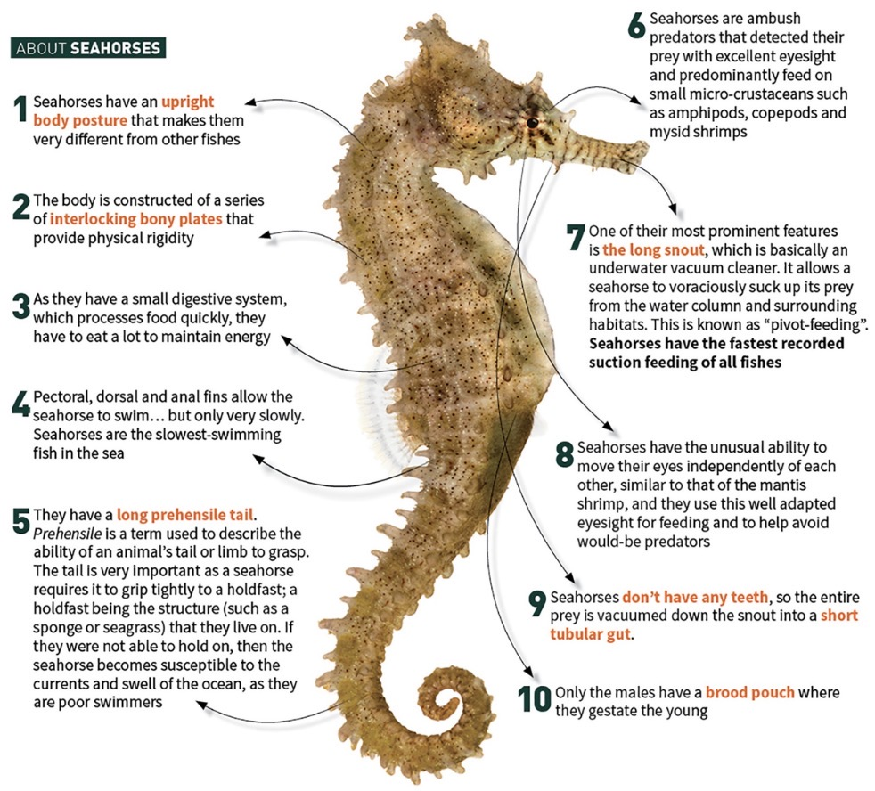
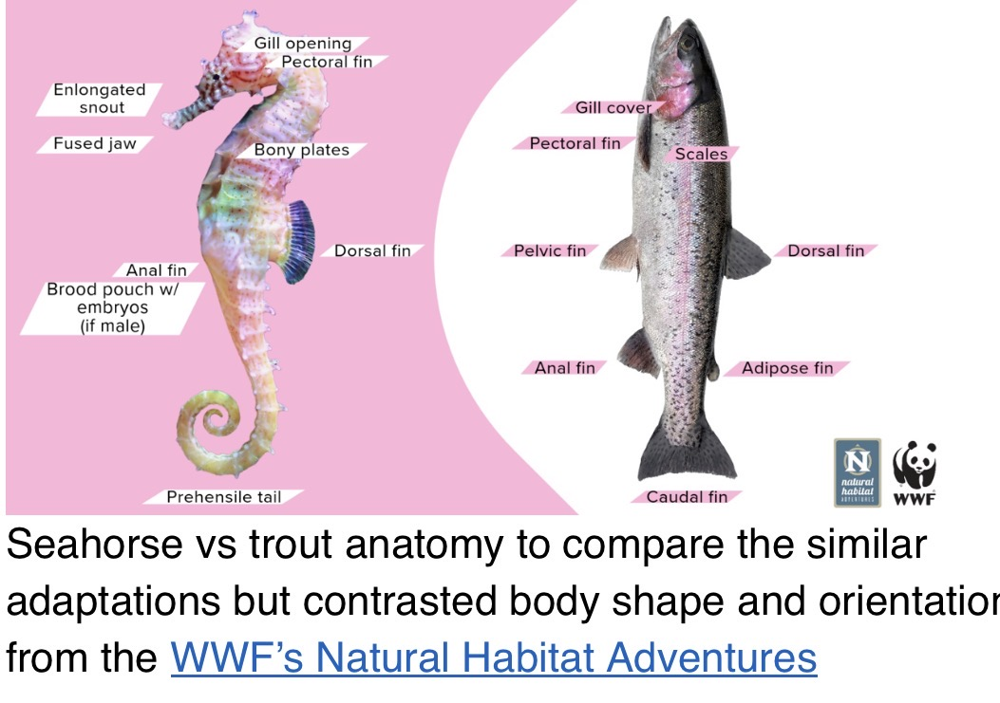
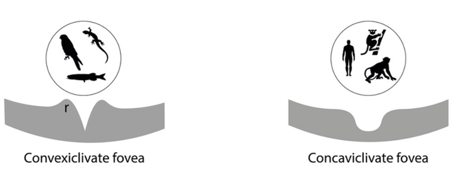

Overview
The big-bellied seahorse (Hippocampus abdominalis) is among the largest seahorses, reaching approximately 35 cm (14 inches) in total length. Total length is not the same as body height.
Habitat and range
Found around southeastern Australia, Tasmania and New Zealand, in seagrass, macroalgae, rocky reefs and sheltered bays.
Feeding
An ambush predator of small crustaceans including mysids and amphipods. Seahorses use rapid pivot feeding and suction to capture prey.
Male pregnancy
The female transfers eggs to the male brood pouch after courtship. The male broods developing young. Published species accounts describe a gestation period of approximately 28–34 days, varying with conditions, and broods often numbering in the hundreds.
Young and life cycle
Newborn seahorses are tiny, independent fry. The source describes juveniles temporarily holding drifting seaweed before settling in coastal habitats.
Armor and camouflage
Bony plates protect the body, the grasping tail anchors the fish, and changes in coloration help camouflage and communication.



Conservation
FishBase (IUCN Red List assessment dated August 19, 2016; status shown in its 2025-2 listing) reports Least Concern for this species. All seahorses (Hippocampus spp.) are listed under CITES Appendix II, which regulates international trade rather than prohibiting it. Habitat loss, bycatch and wildlife trade remain useful conservation topics. Check authoritative listings again before publication.
Aquarium history
The source recalls big-bellied seahorses in Splash Zone and The Secret Lives of Seahorses. Ocean in Motion is a new exhibit with a different layout, not simply Splash Zone 3.0.
Guide talking points
Why do males have a pouch? To brood developing young. Are seahorses the only egg-carrying males? No: male brooding also occurs in pipefish and other animals. Why the curled tail? To grip vegetation and other structures.
References
Source: Naturalist update covering October 8–14, 2026. Suggested verification sources: Australian Museum, Project Seahorse, Fishes of Australia and peer-reviewed studies provided with the weekly update. Gestation and brood-size context: Animal Diversity Web, Hippocampus abdominalis species account. Range and habitat: Fishes of Australia. Review numerical claims and image permissions before publication.
